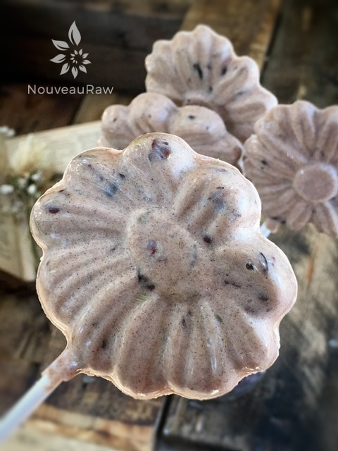

Chocolatey Black Licorice Bark
~ raw, vegan, gluten-free, nut-free, sugar-free ~
Are you a black licorice lover? If so, you will really enjoy this treat. Did you know that fennel tastes just like black licorice? When my mother was pregnant with me she said that she CRAVED black licorice endlessly! It’s about all she ate. So it is my theory that my blood runs black rather than red. haha
I have used fennel in another bark recipe but this time wanted to combine it with some chocolate. I use fennel in its whole form because I like the crunch factor that it adds to the bark. If you want a smoother mouthfeel, then I recommend using your spice grinder to get the fennel seeds and cacao nibs into a powder form.
Cinnamon has been used medically to treat gastrointestinal problems and to help calm the stomach. It is a calmative, an agent that helps break up intestinal gas. Fennel seeds also provide quick and effective relief from many digestive disorders.
They help to overcome gas, cramps, acid indigestion, and many other digestive tract maladies. Remember that Wrigley’s Doublemint gum commercial (sings the jingle) “Double your pleasure, double your fun, chew double the gas relief spice and you will have none!” Oh, ok, that was bad… haha
I used a Make ‘n Mold called “Love Me Daisy” part #0213, which came from a local craft store. I actually love the outcome with the nibs and seeds. It adds depth to the end product. You could easily use any mold that you desired or even just pour it into a small cup! But I encourage you to have fun with it!
Ingredients:
- 1/4 cup raw coconut butter or coconut oil, softened (I used oil in this recipe)
- 1 Tbsp raw cacao nibs
- 1 Tbsp fennel seeds
- 1 tsp ground cinnamon
- 1/2 tsp liquid stevia
Preparation:
- Soften the coconut oil or butter by placing the coconut container in a bowl filled with hot water.
- Do not completely melt it, just warm it to a softened stage. The reason for keeping the coconut oil at a soft stage rather than melted is when the oil is pure liquid all of the added ingredients sink to the bottom of your mold.
- With the coconut oil at a soft, thick stage everything will remain suspended in the oil.
- In a bowl combine coconut oil or butter, cacao nibs, fennel seeds, cinnamon, and stevia.
- Using a spatula, mix everything together until well combined.
- Pour the mixture into the mold and gently tap it to even out the batter.
- Freeze for at least 10 minutes. Once frozen, pop them out and store them in an air-tight, freezer-proof container.
- Note: these will melt at room temp so it is best to pull one out and eat right away.

© AmieSue.com